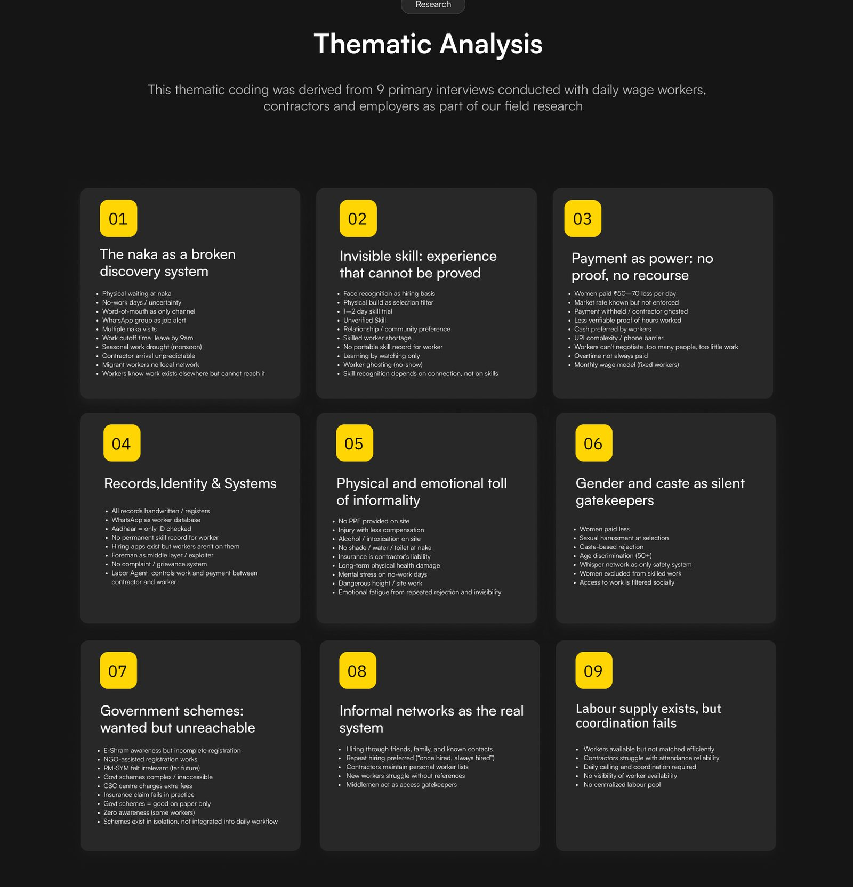
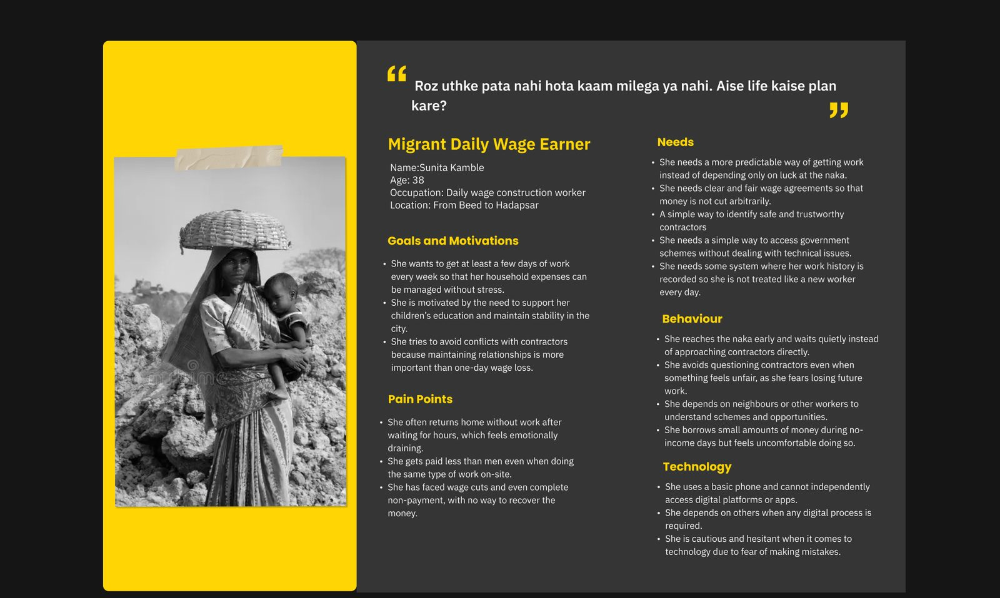
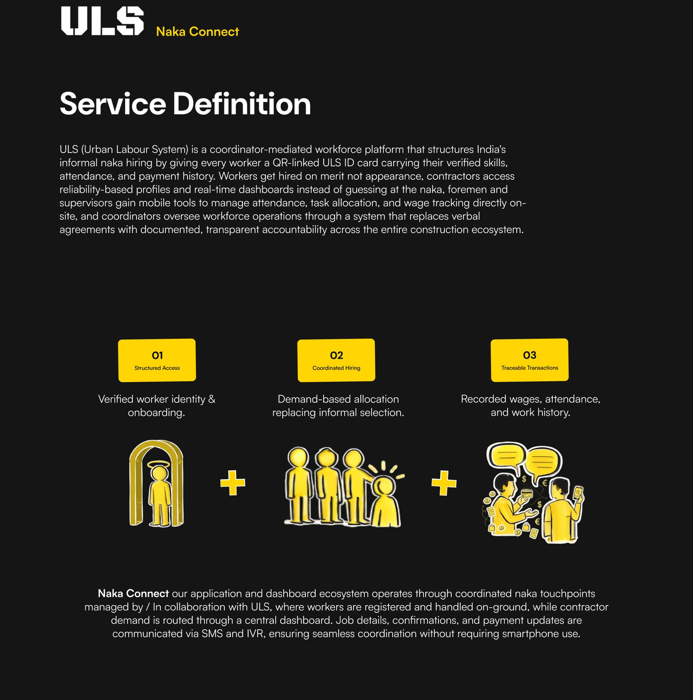
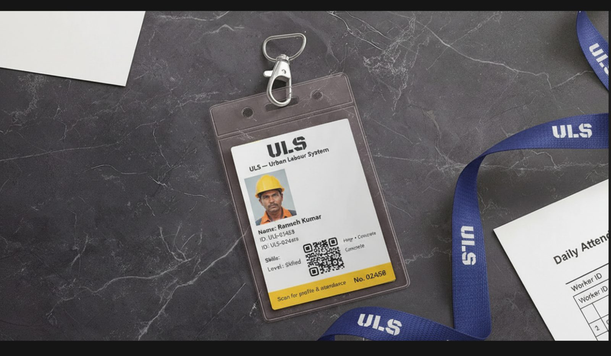
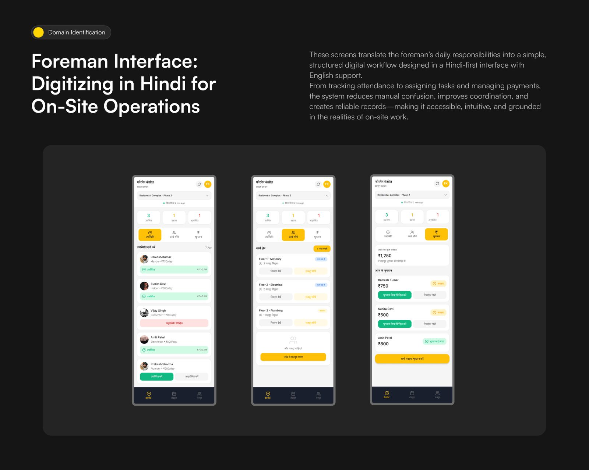
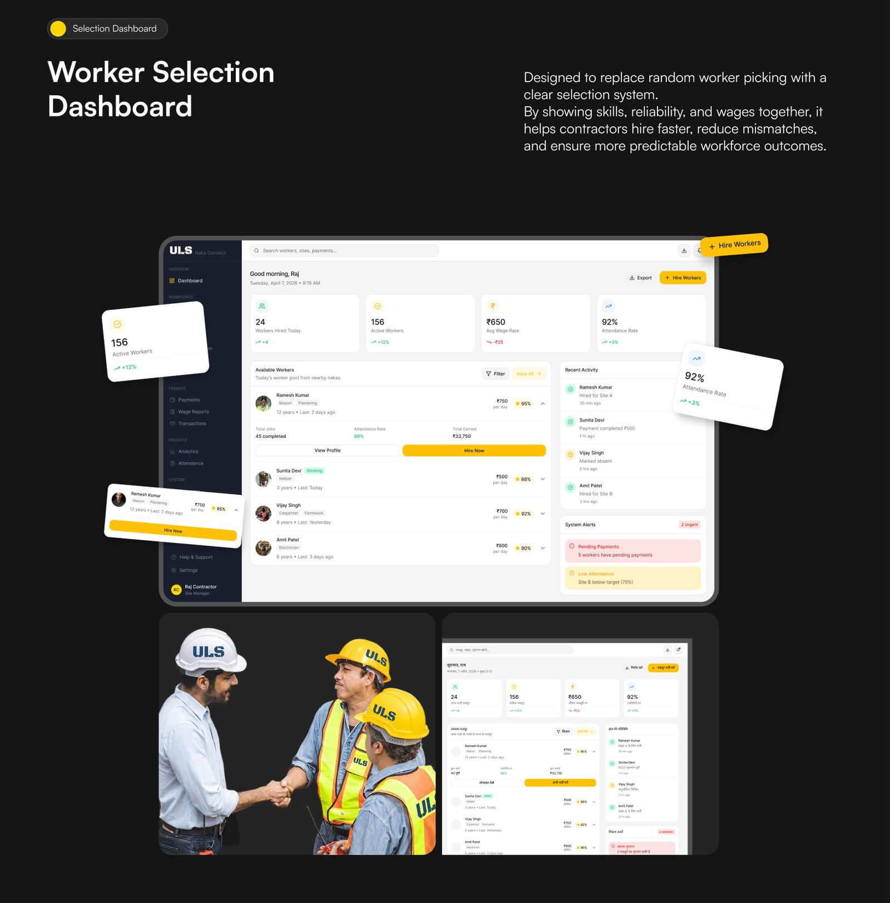

A service that gives daily wage workers at urban nakas a verified identity, a fair wage agreement and a record of every day they work.
Every morning, workers wait at the naka and contractors pick them by appearance, familiarity or build. Years of skill cannot be proved, wages are paid in cash with no receipt, and the welfare schemes built for these workers rarely reach them.
Interviews at nakas and construction sites with workers, contractors and families, coded into what actually breaks: discovery, proof of skill, payment, safety and access.

Workers, a semi-skilled worker, a contractor, a supervisor and the foreman in the middle, each with a line in their own words.

A coordinator-led service built on three moves: verify the worker, allocate by demand, and record every wage and attendance mark.

Every worker gets a QR-linked ULS ID. It works at the naka without a smartphone, and follows the worker from site to site.

Attendance, work allocation and daily wage logging, designed for the person who actually runs the site.

Contractors see verified skills, reliability and wages side by side, and the naka becomes a place a worker arrives at with the job already confirmed.

The full case study is on its way to Behance. The rest of the work is already there.